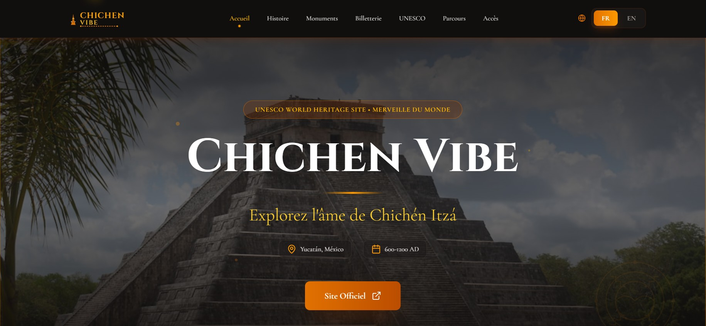
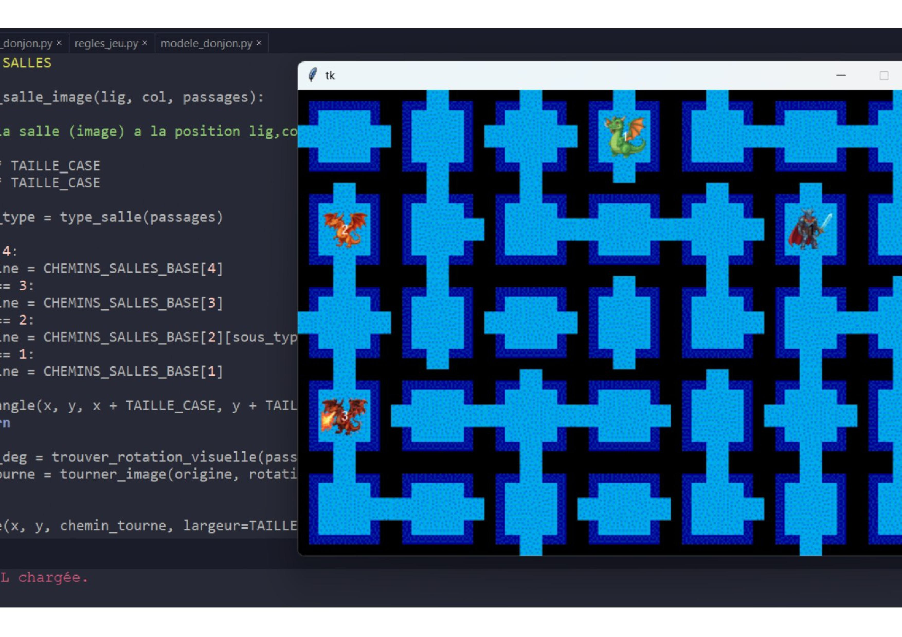
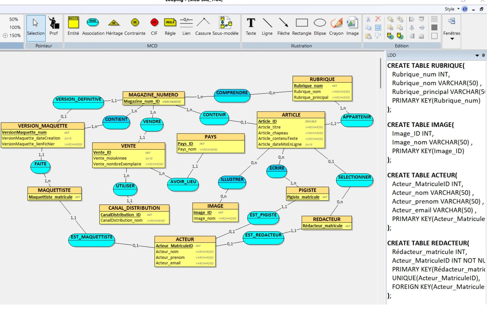
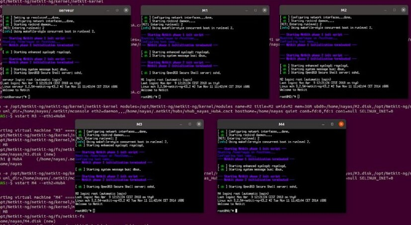

Étudiant en BUT Informatique (1ère année) | Champs-sur-Marne

Conception de Chichen Vibe, un site vitrine dédié à l'exploration de Chichén Itza avec un accès direct aux ressources officielles de l'UNESCO.

Développement d'un jeu de logique sous Python où le joueur doit déplacer son personnage à travers plusieurs obstacles pour éliminer des dragons.

Création complète d'une base de données, en partant de la modélisation des besoins jusqu'à l'écriture des scripts et des requêtes SQL pour manipuler les données.

Mise en place d'un réseau virtuel pour que les ordinateurs reçoivent automatiquement une adresse IP et puissent se connecter à internet.
Septembre 2025 — Présent
BUT Informatique — 1ère Année
IUT de Champs-sur-Marne | Développement, réseaux et gestion de projet
Juin 2025
Diplôme du BAC STI2D
Spécialité Énergie et Environnement | Lycée Langevin Wallon - Champigny-sur-Marne (94)
2023 — 2024
Tutorat
Animation de séances de soutien bénévole et pédagogie individuelle.
2020 — 2023
Monteur vidéo
Réalisation de contenus éducatifs et visuels | Collaboration sur la sélection des sujets
Février 2022
Stage d'observation (3ème) : Mécanique
Découverte de la gestion de stock et de la relation client en atelier